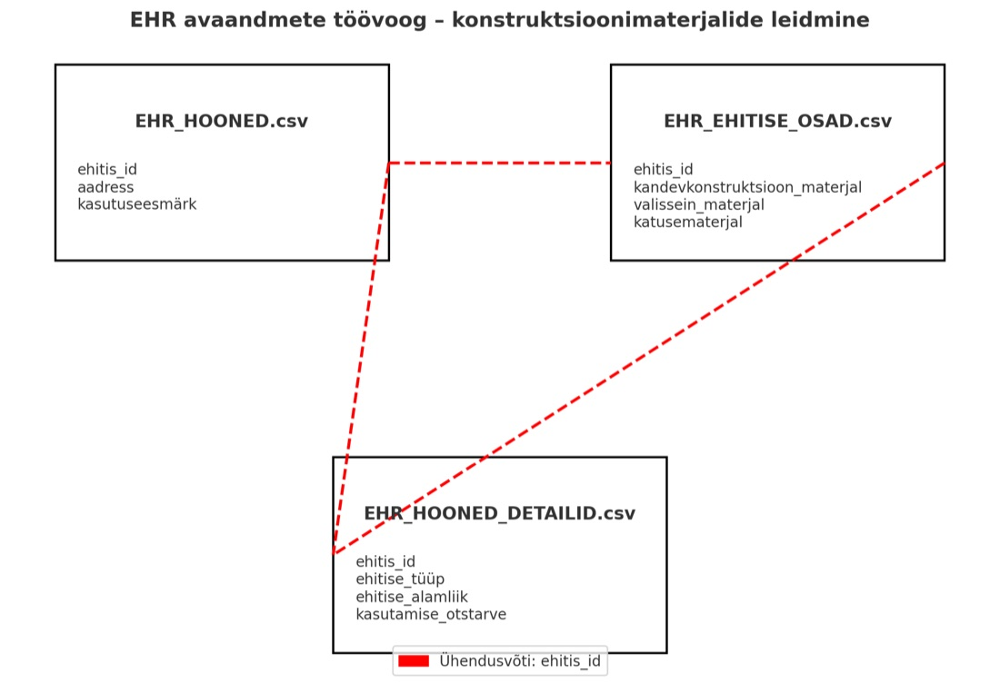

EHR Building Registry Data Pipeline — TalTech
SPIN Unit’s building-use and accessibility studies rely on Estonia’s national Ehitisregister (Building Registry) — but that registry’s raw exports aren’t analysis-ready. This project builds and maintains the pipeline that turns them into something usable.
An ongoing technical partnership with TalTech, run in two build cycles roughly eight months apart: an initial GIS-join delivery in early 2025, followed by an October 2025 refresh that added direct API integration as a lighter-weight alternative to bulk file downloads.
Bulk EHR exports covering buildings, building parts, technical data, and usage classifiers are joined by building ID, filtered by construction year and use code (excluding, for instance, cottages), and output as GeoPackages for GIS use — alongside a newer workflow pulling building details directly from the EHR API on demand.
Provides the clean, structured building-stock data underpinning SPIN Unit’s broader Estonian urban analysis work — infrastructure for other projects rather than a standalone deliverable in itself.
{kind=link}

Open full size ↗